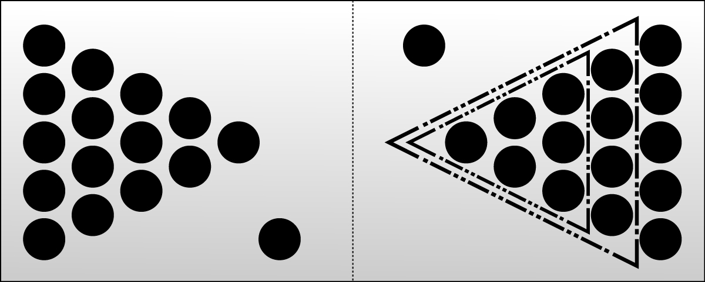
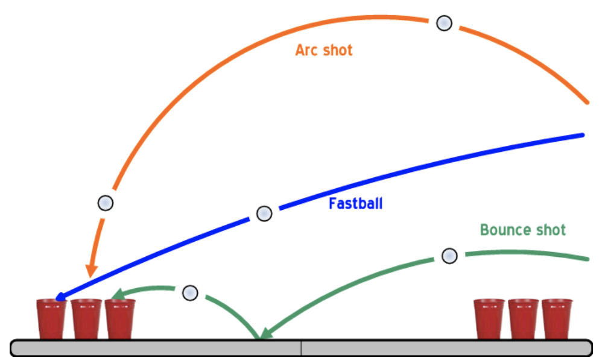

Anmeldephase
bis zum 10.04.2019
- Der Beer Pong Senat -
-
Für die Startgebühr von 15€ pro Spieler werden folgende Leistungen vom Veranstalter gestellt:
Um Euer Team für das Turnier anzumelden ladet bitte das vorliegende Muster-Formular , sowie den Spielerpass runter und sendet diese ausgefüllt an folgende E-Mail Adresse: beerpongfuwa@gmail.com
Angemeldete Teams: -
Füllmenge - Jeder Becher mit ca. 0,1 l gefüllt. Als Faustregel für Bier gilt 1 l Bier pro Team (bspw. 2 x 0,5 l Flaschen auf 6 Becher oder 10 Becher).
Aufstellung - Startaufstellung 6 Becher in der Gruppenphase oder 10 Becher in der K.O Phase .
- Jedes Team darf pro Spiel einmalig die Becherformation in einem gewünschten Verbund aufstellen.  Bild von Privileg89 - Eigenes Werk, CC BY-SA 3.0
Die Abwurflinie - Beim Abwurf des Balles muss sich der Ellbogen des Wurfarms hinter der Kante des Beer Pong Tisches befinden. Bei Verstoß wird der Wurf als ungültig gewertet und die gegnerische Mannschaft bekommt den Ball.
Der Wurf - Jedes Team wirft pro Spielzug 2 Bälle.
- Besteht das Team aus 2 Spielern, wirft jeder einen Ball, besteht das Team aus einem Spieler, wirft dieser beide Bälle.
- Der Ball gilt als geworfen, sobald er die Hand des Spielers verlassen hat.

Verteidigung - Das verteidigende Team, darf den Ball nur dann wegschlagen, wenn dieser Kontakt zum Tisch oder mit einem Cup hatte (Bounce-Ball).
- Fliegt der Ball durch das Verteidigen in einen Cup gilt dieser als getroffen.
- Berührt ein Spieler des verteidigenden Teams die Cup-Formation und der Ball trifft keinen Cup, gilt ein Cup als getroffen. Das werfende Team darf hierbei den Cup frei wählen, der vom Tisch genommen werden muss.
Treffer - Sobald ein Wurf im gegnerischen Becher landet und auf dem Getränk aufkommt, gilt der Ball als versenkt.
- Kreiselt der Ball in einem Becher, dann darf er von dem Team rausgepustet werden ohne eine Berührung des Bechers! Bei einer Berührung zählt der Wurf als Treffer.
- Prallt der Ball während des Wurfs von einem Spieler oder Gegenständen in die Becher, zählt dies als Treffer und es müssen 2 Becher getrunken werden.
- Geht der Ball in den Becher und wirft ihn um, zählt dies als Treffer. Wird der Becher von außen umgeworfen, so wird dieser an seine ursprüngliche Position aufgestellt und wieder befüllt.
- Es werden nur getroffene Becher getrunken, also keine über die der Ball rollte.
Same Cup Rule - Treffen beide Spieler aus dem gleichen Team innerhalb von einer Runde in den gleichen Becher, so gilt die Same Cup Rule.
- Hierbei müssen vom gegnerischen Team 3 Becher getrunken werden, der getroffene Becher und zwei vom werfenden Team ausgesuchten Becher.
- Zwei Bounce Bälle in einen Becher bedeuten 5 Becher.
- Ein Bounce Ball und ein normaler Wurf in den selben Becher bedeutet 4 Becher.
Death Cup Rule - Sollte ein Teammitglied einen Becher, der aus der vorhergehenden Runde desselben Spieles schon getroffen wurde, aber noch nicht getrunken wurde, ist das der Death Cup.
- Das Team bei der der Death Cup getroffen wurde hat sofort verloren.
- Das Verlierer Team muss alle noch auf dem Tisch stehenden Becher leer trinken.
Roll Back Rule - Sollte der geworfene Ball an einem gegnerischen Becher so abprallen, dass der Ball wieder über die Mittellinie des Beer Pong Tisch zum Werfer zurückrollt, gilt die „Roll Back Regel“. Das heißt er bekommt einen Trickshot.
- Greift die gegnerische Mannschaft den zurückrollenden Ball bis zur Mittellinie ab, hat die Sonderregel keinen Bestand mehr.
Doppeltreffer - Treffen beide Spieler einen beliebigen Becher, werden die Bälle an das werfende Team zurück gegeben und diese haben einen weiteren Versuch.
Die Becher - Es gilt: „Der Cup ist unantastbar!“
- Getreu diesem Motto dürfen die Spieler beider Teams die Becher während dem Spiel nicht berühren!
- Ausnahmen sind natürlich, wenn eine der Teams eine Formationsänderung
ausführt oder ein getroffener Becher vom Tisch genommen wird, um ihn leer zu trinken.
- Wird ein Becher also während dem laufenden Spiel berührt oder umgeschmissen, muss der Cup getrunken werden und ist somit automatisch aus dem Spiel.
Fouls mit dem Ball - Kommt die gegnerische Mannschaft mit dem Ball während eines laufenden Spielzugs in Kontakt ohne dass der Ball den Beer Pong Tisch berührt hat (Ausführung eines Air Shot) wird dies als Foul gewertet.
Strafen - Die benachteiligte Mannschaft darf sich einen Becher der gegnerischen Mannschaft aussuchen. Dieser muss von der foulenden Mannschaft getrunken werden.
Spielende - Wenn alle Becher eines Teams getroffen wurde, muss dieses Team alle restlichen Becher des Tisches leer trinken, sofern die Redemption nicht greift.
Fälle - Die Redemption steht nur dem Team zu, welches nicht begonnen hat und kann zu folgenden 4. Szenarien führen:
- Niederlage: Es wird nichts getroffen und alle Becher müssen getrunken werden
- Schadensbegrenzung: Die Anzahl der getroffenen Becher unterliegt der Anzahl der vorhanden Becher.
- Unentschieden: Die Anzahl der getroffenen Becher entspricht der Anzahl der vorhanden Becher.
- Sieg: Die Anzahl der getroffenen Becher überliegt der Anzahl der vorhanden Becher. Achtung: Es werden auch Becher dazugezählt, welchem vom vorläufigen Gewinner-Team theoretisch getroffen wurde.